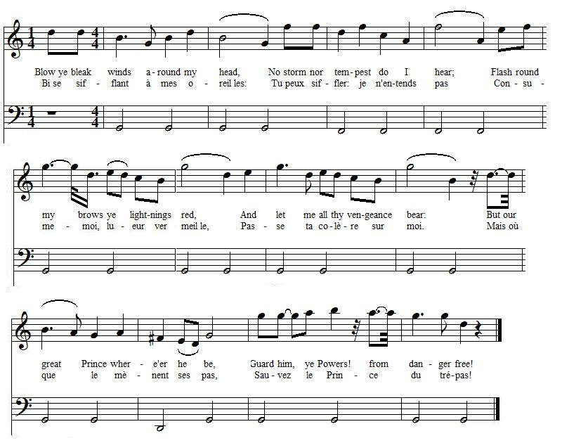

Blow ye bleak winds
Bise sifflant à mes oreilles
From the "True Loyalist", 1779, page 53
Tune - Mélodie"The Highland King", as stated in the "True Loyalist"
A traditional tune, from Ronn McFarlane's "Scottish Lute", vol II
Sequenced by Christian Souchon
|
To the lyrics:
The model for this incitement to revenge is the anonymous love poem: "The generous distressed" , which was set to music by Thomas Augustine Arne (1710 - 1778) and published in 1762 in "Clio and Euterpe or British Harmony" vol.3 (violin, harp), London, Published by Henry Roberts ( a copy is kept at Yale University Library, New Haven CT). (See table below, column 1) This poem had inspired a first paraphrase, which was sung about the streets, on Jemmy Dawson's execution on 30th July 1746. It is older than Shenstone's ballad. As stated in the "European Magazine", April 1801, p.248 it reads as follows (column 2): |
 |
A propos du texte:
Le texte copié par cet appel à la revanche est un poème sentimental anonyme: "La générosité dans la détresse" , mis en musique par Thomas Augustine Arne (1710 - 1778) et publié en 1762 dans "Clio et Euterpe ou l'Harmonie britannique" vol.3 (violon, harpe), à Londres chez Henry Roberts (un exemplaire est conservé à l'Université Yale, New Haven, Connecticut). Cf. ci-dessous, colonne 1. Ce poème a inspiré une première paraphrase, un air des rues sur l'exécution de Jemmy Dawson , le 30 juillet 1746. Il est antérieur à la ballade de Shenstone. Le texte, reproduit dans le "Magazine Européen" d'avril 1801, p.248 est le suivant: (colonne 2): |
|
The generous distressed
1. Blow, ye bleak winds, around my head And sooth my heart-corroding care. Flash round my brows, ye lightnings red, And blast the laurels planted there, But may the maid, where'er she be, Think not of my distress nor me. 2. May all the traces of our love Be ever blotted from her mind. May from her breast my vows remove And no remembrance leave behind. But may the maid, where'er she be, Think not of my distress nor me. 3. O! may I ne'er behold her more, For she has robb'd my soul of rest. Wisdom's assistance is too poor To calm the tempest in my breast. But may the maid, where'er she be, Think not of my distress nor me. 4. Come death, O come, thou friendly sleep And with my sorrows lay me low, And should the gentle virgin weep, Nor sharp nor lasting be her woe. But may she think, where'er she be, No more of my distress nor me. source: Emily Ezust 's site, http://www.recmusic.org/lieder/ |
Dawson's Lament.
1. Blow, ye bleak winds, around my head Sooth my heart-corroding care. Flash ye bright lightnings round my brows Blast the laurels planted there, But may the maid, where ever she be, Think not on my distress nor me. 2. What cruel news sounds in mine ear, That my beloved is in distress! What cruel heart could then forbear To mourn the torments in his breast? Could I but find him wheree'er ha be, That I might share his misery. 3. I'll search the groves both night and day To find out my beloved swain: To the propitious Gods I'll pray That my request I may obtain: His vows I'll ne'er blot out of my mind: O, who can be cruel to one that's so kind? 4. Could I but find that lovely man Whose breast so tenderly doth flow! What's life to me? It's but a span Ten thousand on me would bestow Clasped in his arms till cruel death Shall us both bereave of breath. source: the European Magazine and London review, volume 39 , for April 1801, page 248 |
La générosité dans la détresse
1. Sifflez, bises, à mes oreilles! A mes alarmes portez soin! Entourez-moi, lueurs vermeilles! Consumez ces lauriers au loin! Charmante fille, où que tu sois, Oublie ma détresse! Oublie-moi! 2. Le souvenir de notre amour De son cœur à jamais s'efface! Mes vœux, mes soupirs n'ont plus cours. Oh, qu'il n'en reste nulle trace! Charmante fille, où que tu sois, Oublie ma détresse! Oublie-moi! 3. Puissé-je ne plus la revoir. Plus de paix après son passage. La sagesse n'a point pouvoir De calmer en moi cet orage. Charmante fille, où que tu sois, Oublie ma détresse! Oublie-moi! 4. Viens mort, sommeil réparateur, Prends, avec ma vie, mes chagrins. Si cette enfant verse des pleurs Que ses larmes ne durent point, Qu'elle oublie vite, où qu'elle soit, Détresse, amant, tout à la fois! (Trad. Christian Souchon (c) 2011) |
Lamentation de Dawson
1. Sifflez, bises, à mes oreilles! A mes alarmes portez soin! Entourez-moi, lueurs vermeilles! Consumez ces lauriers au loin! Charmante fille, où que tu sois, Oublie ma détresse! Oublie-moi! 2. J'apprends de terribles nouvelles: Mon amant est dans le malheur! La plus cruelle âme peut-elle Alors faire taire son cœur? Je veux aller, où que tu sois, Partager ce sort avec toi! 3. je fouillerai le jour, la nuit, A sa recherche les bosquets Je prierai Dieu qu'à mes suppli- Cations Il veuille accéder. Pour moi ses vœux ont toujours cours. Qui peut s'en prendre à notre amour? 4. O, puissé-je, mon bel amant, Sur ton sein appuyer ma tête! Qu'est la vie pour moi? Un empan! Mais dix mille au moins si je reste Blottie contre toi, serrée fort, Et que nous unisse la mort. (Trad. Christian Souchon (c) 2011) |
|
Another parody of the same text is found in
"Lucinda"
, a "Dramatic Entertainment in three acts" published in 1769 by the Rev. Charles Jenner (1736 - 1774). It begins:
" Blow, gentle winds, around my head..." But, since the present Jacobite poem addresses in the last verse the Chevalier de Saint-George who died in 1766, it must be anterior. Robert Burns's “Strathallan’s Lament” might also be derived from the same anonymous poem: It begins: Thickest night, o’erhang my dwelling! Howling tempests, o’er me rave! but it could be a reminiscence of Shakespeare's King Lear Act III scene II: “Blow winds and crack your cheeks! Rage! Blow!” (ending with a reversed quotation from John Milton's "Paradise Lost": "The wide world is all before us— But a world without a friend!" instead of "The World was all before them" ) |
Une autre parodie du même texte se trouve dans
"Lucinda"
, un "divertissement dramatique en trois actes" publié en 1769 par le RP Charles Jenner (1736 - 1774). Il commence ainsi:
"Souffle vent léger autour de ma tête..." Mais le présent poème Jacobite qui s'adresse au dernier couplet au Chevalier de Saint-Georges qui décéda en 1766 est forcément plus ancien. Les Lamentations de Strathallan de Robert Burns s'inspirent peut-être aussi de ce même poème anonyme. Le début en est: "Hurlez, tempêtes, faites rage! O nuits, recouvrez ce désert!" Mais ce pourrait être aussi une réminiscence du Roi Lear de Shakespeare, acte III, scène II: "Soufflez les vents avec rage, à vous faire éclater les joues!" (La fin est sans aucun doute une citation à rebours, de "Paradis Perdu" de Milton: "Le monde devant nous s'étale— Mais c'est un monde sans amis." au lieu de "Le monde s'ouvrait devant eux" ). |

|
A SONG
Tune: "The Highland King" 1. Blow ye bleak winds around my head, No storm nor tempest do I hear; Flash round my brows ye lightnings red, And let me all thy vengeance bear: But our great P[rinc]e where'er he be, Guard him, ye Powers! from danger free! 2. May Heaven's frown a warning prove, O! may it ne'er forsake his mind, But from his breast despair remove, And all the hero leaves behind: Then may the P[rinc]e where'er he be, Soon from our bondage set us free! 3. O may he soon return in power; That from our slavery we may rest, Foreign assistance is too poor, (cf. Gallia's shore ) To every honest British breast: But may the P[rinc]e, where're he be, With none but Britons, Britons free. 4. Come J[ame]s, O! come, righteous K[in]g, And thy insulting foes lay low; But self-convicted should they deign, To strive for mercy, mercy shew: Then may these happy Nations Three, All with one voice cry: "This is he." Source: "The True Loyalist; or Chevaliers's Favourite: being a collection of elegant songs, never before printed. Also several other loyal compositions, wrote by eminent hands." Printed in the year 1779. Page 53 |
CHANT
Sur l'air du "Roi des Highlands" 1. Bise sifflant à mes oreilles: Tu peux siffler: je n'entends pas Consume-moi, lueur vermeille, Passe ta colère sur moi. Mais où que le mènent ses pas, Sauvez le Prince du trépas! 2. La colère du Ciel l'avise De ne point se décourager Que le désespoir n'ait de prise Sur lui, ni les sombres pensers Où que le conduisent ses pas, Bientôt il nous délivrera. 3. Puisse-t-il revenir en force De nos chaînes nous délivrer! L'aide étrangère est peu véloce (cf. Gallia's shore ) Et les Britanniques pressés: Où que le conduisent ses pas, Qu'il ait nos frères pour soldats! 4. Roi Jacques, viens avec confiance Ecraser tes calomniateurs. Et s'ils implorent ta clémence Montre-toi généreux vainqueur! Puissent ces royaumes tous trois T'acclamer d'une seule voix! (Trad. Christian Souchon (c) 2011) |